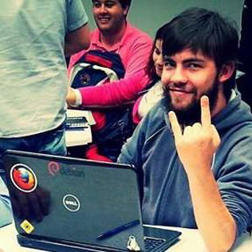

Sobre
Hack Day é um evento aberto onde entusiastas da tecnologia se reúnem para programar, ensinar, aprender e se divertir!
Com este propósito, o PatoLivre Hacker Club convida você a participar do primeiro Hack Day de Pato Branco. Um dia de muito código e diversão :-)
Nesta edição teremos várias atividades: apresentação de projetos, mesa-redonda, workshops e espaço aberto para hacking!
OBS: Este é um evento comunitário e gratuito. Pedimos que faça sua inscrição devido a limitação de vagas.
O Local
Faculdade Mater Dei, R. Mato Grosso, 85501-200
Pato Branco
Paraná
Pato Branco
Paraná
Palestrantes

Ivolanda
Parazito
Gean
Torto
Dyego
Casemonstro
Agenda
Palestras
| Horário | WorkShop/Palestra | Descrição |
|---|---|---|
| 8h30 | Cadastramento | - |
| 9h00 | Abertura: PatoLivre e PatoBot | O PatoBot é um robô controlado via web cujo objetivo foi desenvolvimento colaborativo e envolvendo hardware e software: Raspberry, Arduino, Python, JavaScript, Android e FirefoxOS. |
| 10h00 | Mesa Redonda - Cultura Hacker e Software Livre | Mesa-redonda: membros do PatoLivre estarão discutindo tópicos que venham a surgir em torno da cultura hacker e interagindo com os participantes. |
| 12h00 | Intervalo - Almoço | - |
| 13h00 | Espaço aberto (discussão, networking, hacking) | Espaço Aberto: paralelo aos workshops teremos espaço destinado a interação dos participantes. É um momento de discussão, networking e hacking! É só chegar e fazer acontecer! |
| 15h00 | Espaço aberto (discussão, networking, hacking) | Espaço Aberto: paralelo aos workshops teremos espaço destinado a interação dos participantes. É um momento de discussão, networking e hacking! É só chegar e fazer acontecer! |
| 18h00 | Encerramento |
Workshops
| Horário | WorkShop/Palestra | Descrição |
|---|---|---|
| 13h00 | Apache Cordova para diversas plataformas Laboratório 01 | Um dos maiores problemas atuais, enfrentados pelos desenvolvedores móveis, é a grande quantidade de linguagens de programação para se desenvolver uma aplicação multiplataforma, problema esse que encarece qualquer projeto. O Apache Cordova é um framework livre multiplataforma que permite desenvolver aplicativos para os principais sistemas a partir do mesmo código, utilizando HTML5, CSS3 e JavaScript. Assim, esta palestra tem como objetivo demostrar o que pode ser feito com o Cordova, ensinar como iniciar o desenvolvimento de aplicativos móveis e fazer o deploy em celulares, utilizando exemplos práticos no sistema operacional Firefox OS. |
| 13h00 | Fluindo com Python Laboratório 02 | Conheça Python através de casos de uso, sua história e evolução e introdução ao Python |
| 13h00 | Virtualização QEMU/KVM Laboratório 03 | Aqui você irá aprender:
|
| 15h00 | Introdução ao AngularJS Laboratório 01 | Junte-se a nós para aprender a como desenvolver uma simples aplicação com AngularJS, utilizando recursos que irão tornar o desenvolvimento web simples, flexível, prazeroso e poderoso. Reduzindo o tempo de desenvolvimento e simplificando todo o processo de criação de uma aplicação para a web. |
| 15h00 | SOLID em projetos Orientados A Objeto Laboratório 02 | |
| 15h00 | Oficina de Robótica Laboratório 03 |